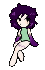

Welcome to my blog!
This blog's here for me to yap about stuff even though nobody might care.
IDs and other stuff about me:
- intersex (LOCAH), transmasculine & genderflux, bisexual
- likely angelkin/otherkin but I don't have enough time to figure that out
- mild ME/CFS + C-PTSD and MDD
- big fan of Psycho Pass, indie RPGMakers (i.e Hello Charlotte, Fear and Hunger), good horror in general
- also big fan of folks like NExpo and Wendigoon
Things I might blog about:
- OCs
- life stuff
- some bits of art I make
- stuff that really pissed me off
Things I absolutely adore:
- my fiance
- our OCs
- pre 2010's internet stuff (from when AOL wasn't a scam)
- creepypastas and horror media
- the color purple (duh)
- nu metal and emo music
- True Detective S1 oh my goodness it's one of the best King In Yellow adaptations out there
- Minecraft, Metal Garden, ABZÛ, imscared, OFF, Layers of Fear